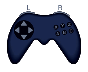
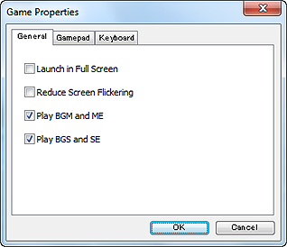

Games created by RPG Maker are started by double-clicking the Game.exe (or Game) file located in the game data folder. If the game data has been compressed, extract it ahead of time by double-clicking.
The controls for games created with RPG Maker are based on the use of a six-button game pad. For descriptive purposes, the button names will be referred to as A, B, C and so on here. The following table shows the correspondence between game pad buttons/keyboard keys and commands in a standard game. To move characters and the cursor, use the directional buttons on the game pad or the arrow keys on the keyboard.

| Name | Game pad | Keyboard | Main function |
|---|---|---|---|
| A | Button 1 | Shift | Dash |
| B | Button 2 | Esc, Num 0, X | Cancel, Menu |
| C | Button 3 | Space, Enter, Z | Confirm, OK, Enter |
| X | Button 4 | A | - |
| Y | Button 5 | S | - |
| Z | Button 6 | D | - |
| L | Button 7 | Q, Page Up | Previous page |
| R | Button 8 | W, Page Down | Next page |

Pressing the F1 key while a game is running displays the dialog box shown here. Use this dialog box to customize game pad button and keyboard key assignments. Clicking the Reset button reverts assignments to their default settings.
The following settings are available on the General tab.
| Key | Description |
|---|---|
| Alt+Enter | Switches between window mode and full-screen mode. |
| Alt+F4 | Forcibly exits the game. |
| F12 | Forcibly returns to the title screen. |
| F2 | Displays the frames per second (FPS) on the title bar. |
| F9 | Opens the debugging window (list of switches and variables) when pressed while moving during play testing. |
| Ctrl | Enables characters to move through impassible tiles and disables random encounters when the key is held down while moving during play testing. |
The title menu appears when a game is started. The following commands are available on the title menu.
This is the menu that appears when the player presses the cancel button while moving on the map. The commands that appear are for using items to recover the actor's stats, saving game progress, and so on. The commands are described below.
When the player encounters an enemy character during the game, the screen switches to the battle screen. The player selects the following commands to proceed through the battle. The game ends if all party members are reduced to zero HP.